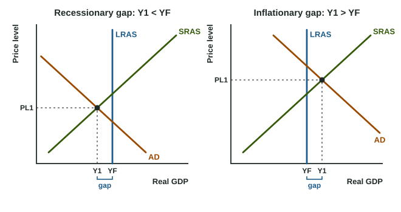

Equilibrium in the Aggregate Demand-Aggregate Supply (AD-AS) Model
The AD-AS model shows the price level and real GDP where AD meets SRAS (short-run equilibrium).
Part 1 · Hook
Why this matters
Part 2 · Before you start
What this builds on
Part 3 · Prerequisite check
Quick check before you start
1. What is a recessionary gap?
- Real GDP below potential output
- Real GDP above potential output
- A fall in the price level
- A rise in the unemployment rate to zero
Show the answer
A recessionary (negative) gap is real GDP below potential (full-employment) output.
- Correct: Real GDP below potential output:
- Real GDP above potential output:
- A fall in the price level:
- A rise in the unemployment rate to zero:
2. Where does LRAS stand?
- Vertical at full-employment output
- Sloping up through full-employment output
- Horizontal at the current price level
- Wherever AD crosses SRAS
Show the answer
In the long run output is at potential at any price level: LRAS is vertical at YF.
- Correct: Vertical at full-employment output:
- Sloping up through full-employment output:
- Horizontal at the current price level:
- Wherever AD crosses SRAS:
Part 4 · See it
See it first

Part 5 · Step by step
How it works, step by step
- AD crosses SRASthe short-run price level (PL1) and real GDP (Y1) are set
- Y1 is to the left of LRASa recessionary gap: unemployment above the natural rate
- Y1 is to the right of LRASan inflationary gap: unemployment below the natural rate
- AD and SRAS cross on LRASlong-run equilibrium at full employment
Part 6 · Key ideas
Key ideas
- The AD-AS model puts AD, SRAS and LRAS on one graph: Price level (PL) up the side, Real GDP (Y) along the bottom.
- Short-run equilibrium is where AD crosses SRAS; label it PL1 and Y1 with dashed lines to both axes.
- Long-run equilibrium is where AD and SRAS cross on LRAS: output at full employment (YF), unemployment at the natural rate.
- Y1 < YF: a recessionary gap, unemployment above the natural rate. Y1 > YF: an inflationary gap, unemployment below it.
Part 7 · Misconception
A common mistake
The wrong idea: Wherever AD crosses SRAS, the economy is at full employment, because that is the equilibrium.
What actually happens: AD crossing SRAS is only a short-run equilibrium. Output is at full employment only when that crossing lies on LRAS.
Part 8 · Check yourself
Check yourself
Exam-style questions. Anything you miss goes into your review queue.
Graph
The AD-AS graph for Country D
1. According to the graph, what kind of gap does Country D have?
- An inflationary gap, because AD and SRAS cross to the left of LRAS
- No gap, because AD and SRAS cross each other
- No gap, because LRAS passes through the AD curve
- A recessionary gap, because AD and SRAS cross to the left of LRAS
Show the answer
In the graph, AD meets SRAS at an output to the left of LRAS: real GDP is below potential, a recessionary gap.
- An inflationary gap, because AD and SRAS cross to the left of LRAS: Left of LRAS means output below potential, which is a recessionary gap.
- No gap, because AD and SRAS cross each other: They cross, which sets short-run output, but not on LRAS, so there is a gap.
- No gap, because LRAS passes through the AD curve: LRAS crosses AD on any such graph; what matters is whether AD and SRAS meet on LRAS. Here they meet to its left.
- Correct: A recessionary gap, because AD and SRAS cross to the left of LRAS: Right: short-run output is below full-employment output.
2. According to the graph, how does Country D's unemployment rate compare with its natural rate?
- It is above the natural rate, because output is below full employment
- It is below the natural rate, because output is below full employment
- It equals the natural rate, because SRAS crosses AD
- There is no way to compare them, as unemployment is not on the graph
Show the answer
Output below full employment means unemployment above the natural rate: there is cyclical unemployment.
- Correct: It is above the natural rate, because output is below full employment: Right: producing less than potential needs fewer workers, so cyclical unemployment is positive.
- It is below the natural rate, because output is below full employment: Lower output means fewer jobs, so unemployment is above, not below, the natural rate.
- It equals the natural rate, because SRAS crosses AD: Unemployment equals the natural rate only at full-employment output, on LRAS.
- There is no way to compare them, as unemployment is not on the graph: Output tells you: below YF, unemployment is above the natural rate.
3. Which statement about Country D's position in the graph is correct?
- It is a long-run equilibrium, because AD equals SRAS
- It is a short-run equilibrium but not a long-run equilibrium
- It is not an equilibrium, because firms want to produce more
- It is both a short-run and a long-run equilibrium at the same time
Show the answer
Where AD meets SRAS is a short-run equilibrium. It is also a long-run equilibrium only if that point is on LRAS.
- It is a long-run equilibrium, because AD equals SRAS: A long-run equilibrium also needs output on LRAS, at full employment.
- Correct: It is a short-run equilibrium but not a long-run equilibrium: Right: planned spending equals output supplied at SRAS, but output is off LRAS.
- It is not an equilibrium, because firms want to produce more: At the AD-SRAS crossing, the output firms supply equals what buyers plan to buy.
- It is both a short-run and a long-run equilibrium at the same time: Output is below YF, so it is not on LRAS.
4. Label the axes and the three curves of this AD-AS graph.
Work on the graph (it needs JavaScript), then check.
Show the answer
Vertical axis: Price level. Horizontal axis: Real GDP. AD slopes down, SRAS slopes up, LRAS is vertical at full-employment output.
- Key: see the explanation
5. The economy starts in long-run equilibrium. Households and firms grow pessimistic and cut their spending. Shift the right curve and mark the new short-run equilibrium.
Work on the graph (it needs JavaScript), then check.
Show the answer
Less spending shifts AD left. The new short-run equilibrium is left of LRAS, with a lower price level and lower real GDP: a recessionary gap.
- Key: aggregate demand shifts left
6. What defines short-run equilibrium in the AD-AS model?
- The price level and real GDP where AD crosses LRAS
- Real GDP at full employment, whatever the price level
- The price level and real GDP where AD crosses SRAS
- The price level at which unemployment is zero
Show the answer
Short-run equilibrium: where AD meets SRAS. Long-run equilibrium: where AD, SRAS and LRAS all meet.
- The price level and real GDP where AD crosses LRAS: AD crossing LRAS gives the long-run outcome only when SRAS passes through the same point.
- Real GDP at full employment, whatever the price level: That is where LRAS stands. Short-run output can differ from it.
- Correct: The price level and real GDP where AD crosses SRAS: Right: there, planned spending equals the output firms supply.
- The price level at which unemployment is zero: Even at full employment there is natural unemployment; equilibrium is where AD meets SRAS.
Part 9 · Summary
Summary
Part 10 · Up next
What comes next
Part 11 · Connections